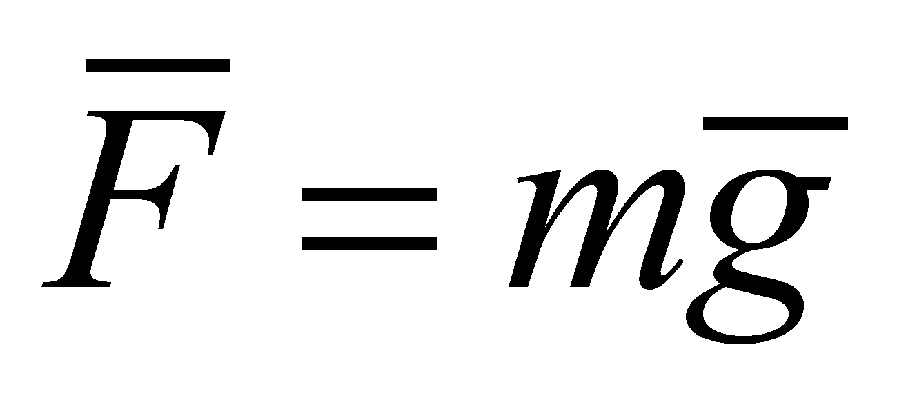
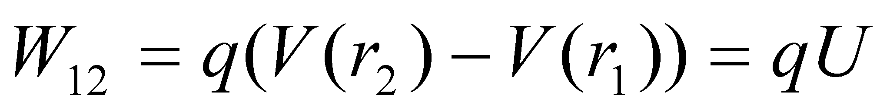

|
|
|
At the acceleration of a mass body m against its inertia, from the rest state up to the velocity v, a mechanical work must be exerted which may be found afterwards as kinetic energy:
(7.6.4.1.1)
The mechanical work exerted on a body is equal to the variation of its kinetic energy:
(7.6.4.1.2)
The mechanical work performed by a conservative force :
 (7.6.4.1.3)
(7.6.4.1.3)
Therefore, in case of the gravitation force:
(7.6.4.1.4)
Each mass element of a rigid body which is spinning with an angular speed around an axis, has the following translation velocity:
(7.6.4.1.5)
and a kinetic energy:
(7.6.4.1.6)
The total rotating kinetic energy of a body with the volume V is:
 (7.6.4.1.7)
(7.6.4.1.7)
where the expression
within the integral does not depend on
 ,
but it is an amount related to the matter’s inertia property at
the rotation around an axis, that is why it is referred to as inertia
moment:
,
but it is an amount related to the matter’s inertia property at
the rotation around an axis, that is why it is referred to as inertia
moment:
(7.6.4.1.8)
Finally, the rotating kinetic energy of a body is:
(7.6.4.1.9)
The external mechanical work required for the displacement of charge q from r1 into r2 with the force –qE against an electrostatic field complies with the energy’s theorem:
(7.6.4.1.10)
and by taking into account that the electric potential is:
(7.6.4.1.11)
resulting that:
 (7.6.4.1.12)
where the potential difference U is the electric voltage.
The energy gained by a charge carrier q placed in electric field, as a result of the acceleration under the voltage U, is qU and in case of N carriers it is NqU=QU. By means of Q=It (where I is the intensity of the electric current) the following values are obtained for the mechanical work under an electric field:
 (7.6.4.1.13)
(7.6.4.1.13)
A plane
capacitor made-up from two conducting plates with an area A,
between which there is a dielectric with electric permeability
 and thickness d
has the capacity:
and thickness d
has the capacity:
(7.6.4.1.14)
The energy Wc stored in this capacitor, equal to the charging mechanical work, is obtained as a result of the integration from q=0 to Q, respectively, from u=0 to U and it is:
(7.6.4.1.15)
For creating a magnetic field generated by a coil with the inductance:
(7.6.4.1.16)
where is the magnetic permeability of the medium inside the coil, A its inner area, l coil’s length and N its number of spires, the current i must increase from the value i=0 to the final value I. The electric current i must be supplied by an external voltage source u which is in the opposition with the self-induction voltage ui (Lenz rule):
(7.6.4.1.17)
The mechanical work exerted in the interval dt, for this purpose, is:
(7.6.4.1.18)
The total mechanical work is equal to the energy WL stored in the magnetic field, according to the energy conservation principle. The expression which results through integration after i from i=0 to I is:
(7.6.4.1.19)
Comment 7.6.4.1.1: In the electrotechnics field, the following expression is used for defining the electromagnetic volume density, being considered as a postulate52:
(7.6.4.1.20)
where E is the intensity of the electric field [V/m], D is the electric flux density [As/m2], H the intensity of the magnetic field [A/m], and B the magnetic induction [Vs/m2], resulting w in [Ws/m3]. By using the relation 7.6.4.1.20, we may issue the following formula for defining the energy stored in an electric capacitor (under the assumption of an uniform field):
(7.6.4.1.21)
where V is the dielectric volume.
Taking also into account that , and , there is the following result, valid for the magnetic energy from a coil:
(7.6.4.1.22)
where V is volume of the magnetic material or the internal volume of the coil.
The photons energy, stated by Plank, was settled under the following hypotheses:
The radiation of an empty enclosure is given by the radiation of the oscillators which make-up the enclosure walls which are under an equilibrium with the radiation field from the inner empty space (defined by the Maxwell’s equation).
The oscillator’s energy is quantified according to the following relation:
(n=0,1,2,...) (7.6.4.1.23)
The oscillators emit radiations only at the variation of their energy state. On this occasion, energy is either emitted or absorbed from the radiation field, under the form of amplitude quanta:
(7.6.4.1.24)
The state equation of the perfect gas is:
(7.6.4.1.25)
where p is the pressure, V the enclosure’s volume, n the number of gas moles, R=8.31451 J/moleK is the universal gas constant and T is the gas temperature.
The heat quantity required for the temperature increase of a mass body m from the initial temperature T1 to the final temperature T2 is determined by means of the calorimetric relation:
(7.6.4.1.26)
where c is the specific heat (depends on the body material) and is the temperature variation. It is required that no phase transition of the body’s structural material to be produced in the interval.
52 K. Simonyi – Electrotehnica teoreticã, Editura Tehnicã, Bucureºti 1974
Copyright © 2006-2011 Aurel Rusu. All rights reserved.